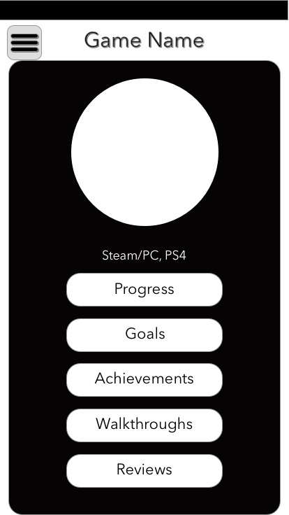

From personal experience and frequent discussions with friends, I realized that hardcore gamers want a dedicated application to keep track of their video game libraries and statistics. My approach was to create a dedicated application to supplement their needs, including being able to track gameplay hours, allow users to compete and compare themselves to friends, and manage hours spent gaming to hours spent offline.

I define hardcore gamers as gamers who either own over 100 games and/or have played one game for over 500 hours. Most of the interviewees are my close connections. The interviews are semi-structured and lasted for about 30 to 40 minutes.
To design an app that would actually solve these real-world problems that many gamers face, I interviewed 10 gamers who I consider as hardcore gamers.

Through the information gained in these interviews I was able to discern two similar patterns in my sample group, which I used to create the user personas below.
James is a third-year college student at the University of Michigan majoring in Computer Science. Even though he is very smart and diligent, James’ academic performance has been in steady decline due to the time he spends playing video games coupled with the increasing difficulty of his coursework. He is currently seeking a way to control his video game addiction while still having the freedom to enjoy playing games.
Scarlett is a recent graduate of the University of Michigan School of Information. Having secured a well-suited job in Ann Arbor, she now has more free time to explore interests that she did not have time to explore during her college years. Her younger brother is an avid gamer, which has peaked her curiosity in video games. Nonetheless, she is worried that she may get overwhelmed by the number of games that she has access to, despite being an organized individual. Her brother has faced this problem and she is afraid that it may occur to her as well.
Wants to get into video games but is looking for a more efficient way to track her own progress through each game
Based on patterns I noticed in my research, I sketched out a few ideas as basic wireframes.
Continuing to use my research data, I created a interaction map diagram to map out my prototype.
Then I created a low-fi prototype of the app.
Here is a collage of some of the screens I created.

Click on the Interactive Wireframe button below to see all of the screens in action.
An essential part of UX design is iterating and reiterating on wireframes and prototypes based on others' feedback.
Here are some of the comments that I received:


One of the largest issues was with having too many unnecessary screens and options that did not help to solving the end problem for users.
With that feedback in mind and another round of feedback, I created the first hi-fi prototype.

After careful consideration and user feedback, the next version used black, white, and two shades of grey.

After this change, I received another round of feedback.


The final visual theme ended up integrating some color to grab the user's attention, but not enough to create dissonance.


 BACKGROUND AND GOAL
BACKGROUND AND GOAL